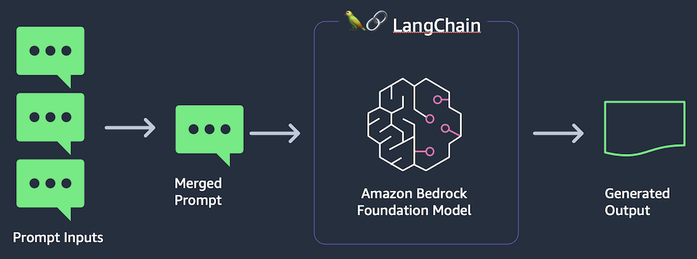
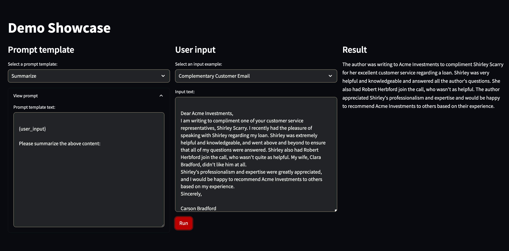

Using Gen AI to run a prompt showcase with Bedrock and Amazon EKS¤
Objective¤
Amazon Bedrock is a fully managed service for using foundation models. It allows you to access models from Amazon and third parties with a single set of APIs for both text generation and image generation.
LangChain provides convenient functions for interacting with Amazon Bedrock's models and related services like vector databases. LangChain offers Python and JavaScript libraries. For this workshop, we will use the Python version of LangChain.
Streamlit allows us to quickly create web front ends for our Python code, without needing front-end development skills. Streamlit is great for creating proofs-of-concepts that can be presented to a wide audience of both technical and non-technical people.
In this pattern we will demonstrate a prompt showcase use case with Gen AI using Bedrock and Amazon EKS. This usecase will demonstrate a prompt showcase which uses different prompt templates such as Summarization, Sentiment and Recommendation with user input to generate a response using Generative AI. In this model we will running a containerized application on Amazon EKS which integrates with Bedrock to provide required user response.
Architecture¤

Prerequisites¤
Ensure that you have installed the following tools on your machine:
- aws cli (also ensure it is configured)
- Bedrock is currently in preview. Please make sure your AWS account is enabled to use Bedrock
- cdk
- npm
- tsc
- make
- Docker
Let’s start by setting the account and region environment variables:
ACCOUNT_ID=$(aws sts get-caller-identity --query 'Account' --output text)
AWS_REGION=$(aws configure get region)
Clone the repository:
git clone https://github.com/aws-samples/cdk-eks-blueprints-patterns.git
cd cdk-eks-blueprints-patterns/lib/generative-ai-showcase/python
IMAGE_NAME=bedrock-showcase
IMAGE_TAG=v2
aws ecr create-repository --repository-name $IMAGE_NAME
aws ecr get-login-password --region $AWS_REGION | docker login --username AWS --password-stdin $ACCOUNT_ID.dkr.ecr.$AWS_REGION.amazonaws.com
docker build -t $IMAGE_NAME .
docker tag bedrock-showcase:latest $ACCOUNT_ID.dkr.ecr.$AWS_REGION.amazonaws.com/$IMAGE_NAME:$IMAGE_TAG
docker push $ACCOUNT_ID.dkr.ecr.$AWS_REGION.amazonaws.com/$IMAGE_NAME:$IMAGE_TAG
cd ../../../../
Deployment¤
If you haven't done it before, bootstrap your cdk account and region.
Set the pattern's parameters in the CDK context by overriding the cdk.json file:
cat << EOF > cdk.json
{
"app": "npx ts-node dist/lib/common/default-main.js",
"context": {
"bedrock.pattern.name": "showcase",
"bedrock.pattern.namespace": "bedrock",
"bedrock.pattern.image.name": "${ACCOUNT_ID}.dkr.ecr.$AWS_REGION.amazonaws.com/${IMAGE_NAME}",
"bedrock.pattern.image.tag": "${IMAGE_TAG}"
}
}
EOF
Run the following commands:
make deps
make build
make pattern generative-ai-showcase deploy
✅ generative-ai-showcase-blueprint
✨ Deployment time: 1287.16s
Outputs:
generative-ai-showcase-blueprint.generativeaishowcaseblueprintClusterNameA8D25DA0 = generative-ai-showcase-blueprint
generative-ai-showcase-blueprint.generativeaishowcaseblueprintConfigCommandC6A8442C = aws eks update-kubeconfig --name generative-ai-showcase-blueprint --region us-east-1 --role-arn arn:aws:iam::XXXXXXXXXX:role/generative-ai-showcase-bl-generativeaishowcaseblue-L18IUPGQ8M2I
generative-ai-showcase-blueprint.generativeaishowcaseblueprintGetTokenCommand5AE22878 = aws eks get-token --cluster-name generative-ai-showcase-blueprint --region us-east-1 --role-arn arn:aws:iam::XXXXXXXXXX:role/generative-ai-showcase-bl-generativeaishowcaseblue-L18IUPGQ8M2I
Stack ARN:
arn:aws:cloudformation:us-east-1:XXXXXXXXXX:stack/generative-ai-showcase-blueprint/cd2c4d90-5317-11ee-9c8d-0e69cfd9ba55
✨ Total time: 1290.99s
To see the deployed resources within the cluster, please run:
kubectl get pod,svc,secrets,ingress -A
A sample output is shown below:
NAME READY STATUS RESTARTS AGE
pod/bedrock-showcase-model-586b558b46-bkwql 1/1 Running 0 60s
NAME TYPE CLUSTER-IP EXTERNAL-IP PORT(S) AGE
service/bedrock-showcase-model-service NodePort 172.20.12.47 <none> 80:30451/TCP 10m
NAME CLASS HOSTS ADDRESS PORTS AGE
ingress.networking.k8s.io/bedrock-showcase-model-ingress alb * k8s-bedrock-bedrocks-63d6186d4e-765982776.us-east-1.elb.amazonaws.com 80 10m
Next, Navigate to the URL show under Ingress to see the below screen to interact with Generative AI showcase application by selecting different promptsand inputs and see the result :

Next steps¤
You can go AWS Blogs to learn about New Tools for Building with Generative AI on AWS. Also check on another blog our on Enabling Foundation Models to Complete Tasks With Agents for Amazon Bedrock.
Cleanup¤
To clean up your EKS Blueprints, run the following commands:
make pattern generative-ai-showcase destroy